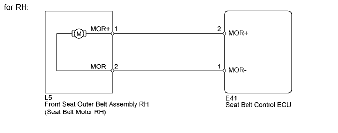
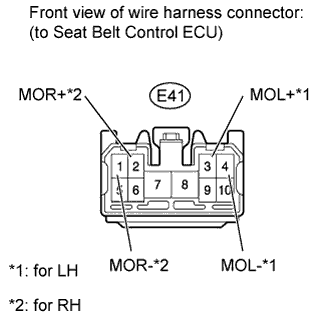
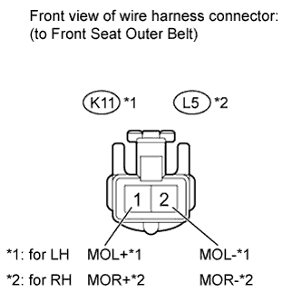

DTC B2000 Short to B+ in Seat Belt Motor RH Circuit |
DTC B2005 Short to B+ in Seat Belt Motor LH Circuit |
| DTC Code | DTC Detection Condition | Trouble Area |
| B2000 |
|
|
| B2005 |
|
|

| 1.CHECK SEAT BELT CONTROL ECU |
 |
Disconnect the E41 seat belt control ECU connector.
Measure the voltage according to the value(s) in the table below.
| Tester Connection | Switch Condition | Specified Condition |
| E41-3 (MOL+) - Body ground | Engine switch on (IG) | Below 1 V |
| E41-4 (MOL-) - Body ground |
| Tester Connection | Switch Condition | Specified Condition |
| E41-1 (MOR-) - Body ground | Engine switch on (IG) | Below 1 V |
| E41-2 (MOR+) - Body ground |
| Result | Proceed to |
| OK (for LHD) | A |
| OK (for RHD) | B |
| NG | C |
|
| ||||
|
| ||||
| A | ||
| ||
| 2.CHECK HARNESS AND CONNECTOR (FRONT SEAT OUTER BELT - SEAT BELT CONTROL ECU) |
 |
Disconnect the E41 seat belt control ECU connector.
Disconnect the K11*1 or L5*2 front seat outer belt connector.
Measure the voltage according to the value(s) in the table below.
| Tester Connection | Switch Condition | Specified Condition |
| K11-1 (MOL+) - Body ground | Engine switch on (IG) | Below 1 V |
| K11-2 (MOL-) - Body ground |
| Tester Connection | Switch Condition | Specified Condition |
| L5-1 (MOR+) - Body ground | Engine switch on (IG) | Below 1 V |
| L5-2 (MOR-) - Body ground |
| Result | Proceed to |
| OK (for DTC B2000) | A |
| OK (for DTC B2005) | B |
| NG | C |
|
| ||||
|
| ||||
| A | ||
| ||